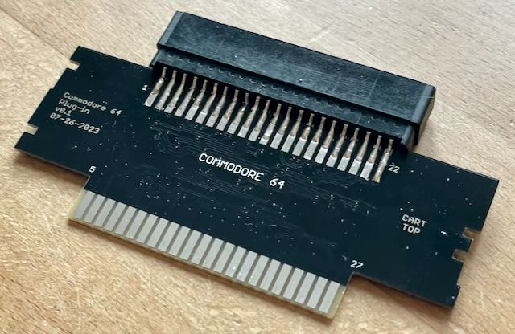
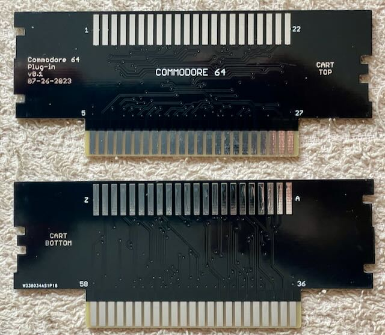

Ich habe die Platine aufgebaut und getestet.

Mit diesem Adapter kann man Commodore 64 Module mit dem Open Source Card Reader auslesen.
Da der Adapter in die SNES Buchse passen soll, ist die Platine 1.2" dick.
| Komponente | Anzahl | Preis | Anbieter |
| Platine | 1 | €1.00 | |
| 2x22 Edge Buchse | 1 | €1.35 | AliExpress |
| nur Platine | €1.00 | ||
| Bausatz | €2.35 |